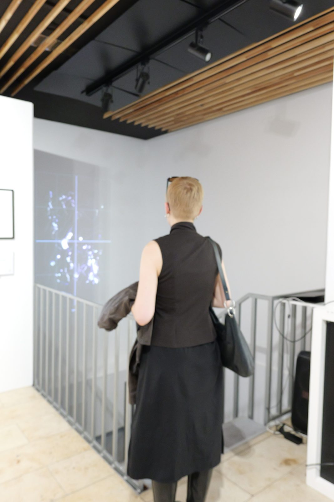
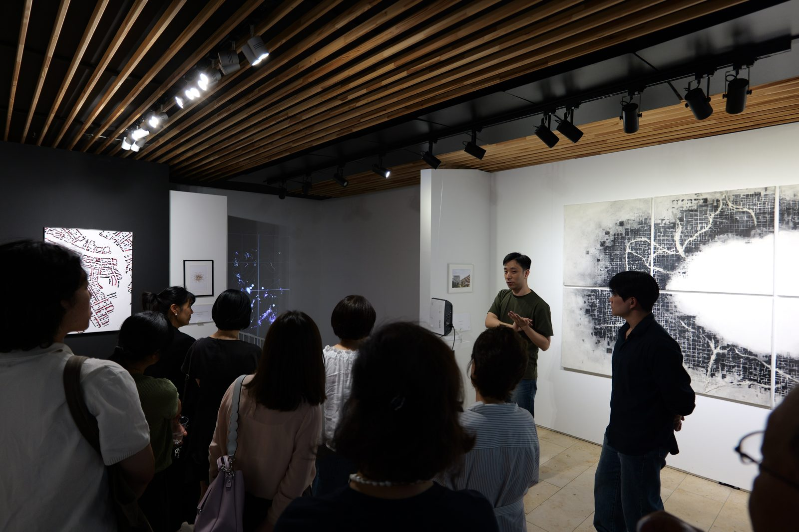
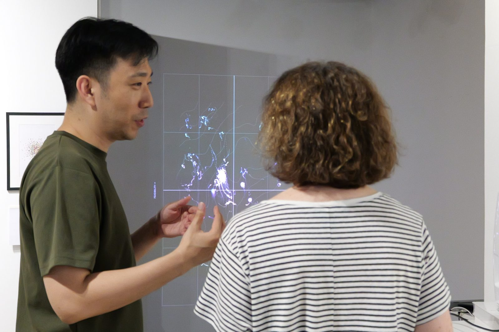

베를린 전시에서 배운 것: Data Art에 대한 관객들의 열정적인 호기심
베를린 전시를 마치고 돌아왔다. 《Da:zwischen》의 오프닝에는 서른 명 남짓한 관객이 찾아왔다. 각자 자유롭게 작품을 둘러보는 동안, 나는 가급적 설명을 아꼈다. 작품은 작가의 손을 떠나는 순간부터 관람객이 이해하는 대로 완성된다고 오래 믿어 왔기 때문이다.

오프닝 중반에는 갤러리의 작품들을 차례로 설명하는 시간이 있었다. 내 차례가 길고 지루해질까 걱정했는데, 오히려 반대로 질문이 쏟아졌다. “점 하나가 사람 한 명인가요?” “이 움직임은 정해져 있는 건가요, 지금 계산되고 있는 건가요?” “어떤 데이터를 쓴 건가요?” “이 결과가 실제 도시계획으로 이어질 수도 있나요?” 답하다 보니 설명은 10분 이상 길어졌고, 다음 날 Artist Talk에서 하려고 준비해 둔 내용을 그 자리에서 거의 다 말하게 되었다. 관객들은 감상에 머물지 않았다. 작품의 핵심 메시지가 무엇인지, 화면의 각 요소가 무엇을 뜻하는지, 어떤 기술로 구현했는지, 연구와는 어떻게 이어지는지를 물었다.

그날 밤 숙소에서 Giorgia Lupi의 강연과 MoMA 전시 영상을 찾아보았다. 자신의 질병 경험을 데이터 드로잉으로 옮긴 작업을 설명하면서, Lupi는 감상에 맡기는 대신 심볼 하나하나의 의미와 자신이 도달한 결론을 처음부터 설명의 중심에 두고 있었다. 그 점이 인상에 남아 영상을 몇 차례 돌려보았다.
둘째 날부터 나는 말이 많은 작가가 되었다. 먼저 에이전트들의 주민 공청회 과정을 시각화한 작품이라고 짧게 소개하고, 앞에 선 관객이 어느 정도의 관심을 갖고 있는지 살폈다. 더 듣고 싶어 하는 기색이면 점 하나하나가 사람들의 발언이라는 것, 두 축을 따라 의견이 움직인다는 것, 점들 사이에 인력과 반발이 있다는 것을 이야기했다. 설명 중에는 화면의 사회자를 바꿔 가며 같은 군중이 다르게 흐르는 모습을 보여주었다. 여기서 더 궁금해하는 관객에게는 인구통계에 근거해 합성한 페르소나와 문장 단위의 발언들을 설명했다. 몇몇 관객과는 거의 학술토론에 가까운 대화가 이어졌다. 관객을 살피고 반응에 따라 설명의 깊이를 조절하는 일은, 돌이켜보면 작품이 다루는 경청과 같은 동작이었다.

기억에 남는 대화 하나를 예를 들면, 베를린에서 건축설계를 가르치고 스튜디오를 운영하는 한 건축사(이름은 Mikel로 기억한다)와의 것이었다. 그는 한국의 농촌에서도 공청회로 계획을 세운다는 사실을 흥미로워했고, 그 과정의 어려움에 깊이 공감했다. 독일에는 그 과정을 워크숍으로 설계해 진행하는 전문 업체와 건축사사무소가 많다고 했다. 그리고 물었다. 합성된 주민들이 실제 사람들의 이기심과 비합리성, 공공정책에 대한 반감까지 반영할 수 있는가. 중요한 질문이라고 생각한다. 지금의 LLM 기반 에이전트는 논리적이고 이성적인 답을 잘 내놓고, 그래서 의견이 서로 닮아 가기 쉽다. 실제 공청회에는 자기 이야기에 빠져 요지를 잡기 어려운 사람도, 자신의 이익만을 고집하는 사람도 있다. 한국에도, 독일에도 있을 것이다. 이것을 어떻게 반영할지는 아직 풀지 못한 문제로 남아 있다.
지난 노트에 이 작품이 베를린의 관람객들에게 어떻게 읽힐지 궁금하다고 적었다. 여기에 대한 답을 받은 느낌이다. 관객들은 깊이 읽고 싶어 했고, 읽고 나서는 더 어려운 질문을 돌려주었다. 설명하는 일을 작품 바깥의 부속으로 여겨 왔는데, 이번 전시에서는 그것이 작품의 일부였다. 다음 작업에서는 처음부터 설명을 설계 안에 넣어 볼 생각이다.
Deliberation Field는 베를린 전시 《Da:zwischen》(2026.7.25–30, PG Galerie)에서 전시되었다. 작품은 웹에서 직접 볼 수 있다.
다른 노트
| 날짜 | 제목 |
|---|---|
| 2026-07-19 | 사람들의 의견을 그리는 일: Deliberation Field |
| 2026-07-14 | 풀 수 없다고 증명하고 접었던 문제 하나: 체류시간 |
| 2026-06-29 | Public(공중)에 대한 논의: Dewey의 글과 학생 시절 작업 하나 |